シンボル
| データ | ||
|---|---|---|
 | 區間最小值 | minv |
 | 代表指定區間最小值的傳回值（ ※ 僅供顯示用，不需設為陣列） | res |
| 針對提問進行處理 | ||
|---|---|---|
 | 更新區間最小值。 | minv[k] ← ? |
 | 決定指定區間的最小值。 | res ← ? |
 | 已經因應查詢完成更新的區間 | k 的軌跡 |
 | 搜尋區間與查詢區間不相交的區間 | if r ≤ a or b ≤ l: |
 | 搜尋區間完全包含在查詢區間內的區間 | else if a ≤ l and r ≤ b: |
| 搜尋區間包含查詢區間和查詢區間以外的區間 | else: | |
アニメーション
針對提問進行處理
